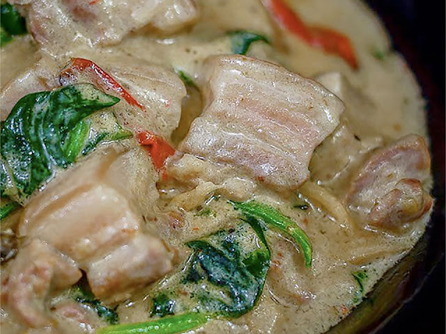

Ginataang Baboy Recipe

Ingredients:
- 1 lb pork belly, cubed
- 2 tbsp cooking oil
- 1 onion, chopped
- 4 cloves garlic, minced
- 1 thumb-sized ginger, sliced
- 1 red bell pepper, sliced
- 1 can (400 ml) coconut milk
- 1/2 cup water
- 2 tbsp fish sauce
- 1 tbsp soy sauce
- 1/2 tsp black pepper
- 1-2 small chilies (optional, for spice)
- 1 bunch string beans (sitaw), cut into 2-inch lengths
- 1 cup eggplant, cubed
- 1/2 cup malunggay leaves or spinach (optional)
Instructions:
- Heat oil in a pot over medium heat. Sauté garlic, onion, and ginger until fragrant.
- Add pork belly and cook until lightly browned.
- Pour in fish sauce, soy sauce, black pepper, and water. Let it simmer until pork is tender.
- Once the pork is tender, add coconut milk, red bell pepper, and optional chilies. Stir well.
- Bring to a boil, then reduce heat to low and simmer for about 10 minutes, allowing the coconut milk to thicken.
- Add the string beans and eggplant. Cook until vegetables are tender, about 5-7 minutes.
- Finally, stir in malunggay leaves or spinach, and cook for another 2-3 minutes.
- Serve hot with steamed rice. Enjoy!
Back to Menu